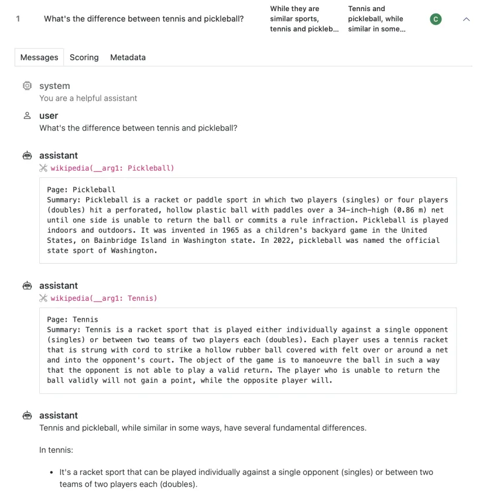

The idea in one sentence. A benchmark score is the output of a chain of harness decisions (prompt template, few-shot examples, chat template, reading the answer by log-likelihood or by generation, answer extraction, normalisation), every harness makes them differently by default, and changing one link moves the same weights on the same questions by tens of points.
Every number on this chain was measured on one model with one link changed. Qwen2.5-0.5B-Instruct on 200 MMLU test items, ten harness settings (section 3, Why scores differ); the GSM8K line is this page's own lm-eval run, two filters on identical outputs. The one figure not from that model: LLaMA-65B, 63.6 under the original MMLU code against 48.8 under lm-eval-harness as of January 2023 (Hugging Face, 23 June 2023).
Eight harnesses grade a model on public tasks; two app-level tools grade your application on your cases. Versions and status are volatile and sit in one dated table (Which one).
| Harness | Unit of work | How it reads answers | Agents isolated? |
|---|---|---|---|
| lm-evaluation-harness EleutherAI | A task YAML: dataset, prompt templates, output type, filters, metrics | Four request types: loglikelihood, loglikelihood_rolling, multiple_choice, generate_until; generated text through filter chains (regex, take first, majority vote) | No; code tasks run on the host only with --confirm_run_unsafe_code |
| Inspect and inspect_evals UK AI Security Institute | A Python Task: dataset, solver chain, scorer, run once per sample | Scorers on the final state (match, includes, pattern, choice, math, model_graded_qa, custom); target_perplexity() for loglikelihood-style scoring since 0.3.212 | Yes: a sandbox per sample (Docker built in; Kubernetes, VMs and cloud sandboxes as packages) |
| lighteval Hugging Face | A Python LightevalTaskConfig; newer tasks also carry Inspect fields (sample converter, solver, scorer) | Loglikelihood and generative metrics; math answers parsed as expressions (Math-Verify style) | Through its Inspect backend |
| HELM Stanford CRFM | A RunSpec: scenario, adapter spec (how to prompt), metric specs | Generation and multiple-choice adapters; seven metric families (accuracy, calibration, robustness, fairness, bias, toxicity, efficiency) | No |
| simple-evals OpenAI | One Python class per benchmark, zero-shot chain-of-thought prompts | Regex on an "Answer:" line, or a grader model | No |
| OpenAI evals | A registry YAML naming an eval template plus JSONL samples | Match (output starts with the ideal answer), includes, fuzzy, model-graded YAML | No |
| Evalchemy DataComp, Bespoke Labs | A Python benchmark class built on lm-eval's model and request types | Per benchmark (MATH500 with hendrycks_math's boxed-answer equivalence) | No |
| Unitxt IBM | A recipe: card (loader, preprocessing, task) plus template, format and demos | Metrics from its catalog | No |
| promptfoo app level | An application config: prompts x providers x test cases, each with assertions | 44 deterministic and 17 model-assisted assertion types | Not a sandbox; its red-team mode attacks your app |
| Braintrust app level, commercial | Eval(data, task, scores) in your code, stored as an experiment | Autoevals, code and LLM-as-judge scorers; online scoring rules on production traces | Remote evals or sandboxes for agent code |
Every harness loads items, gets the model to respond and turns the response into a number. What it treats as the unit of work decides what it can score, what it logs and whether it can run an agent safely.
Sample becomes a TaskState; a chain of solvers transforms it (add a system message, fill a template, call the model, call a tool, critique, loop as an agent); a scorer grades the final state; every step is recorded as an event. It can express agents, sandboxes and judge batteries, and its logs are complete.Real runs by this page: Qwen2.5-0.5B-Instruct (fp32, CPU, 2 threads) on the first ten GSM8K test problems, under lm-eval 0.4.13's gsm8k task as shipped and under inspect_evals 0.23.0's gsm8k on inspect-ai 0.3.276, greedy in both (Inspect needed do_sample=False, section 2) and Inspect capped at 512 new tokens instead of its 2048 default to bound CPU time. Predict first: which harness builds the longer prompt, and which keeps more about one problem? Then step through.
Ten items cannot compare the two harnesses' accuracy (1 correct out of 10 has an exact 95% interval of 0.3% to 44.5%); the stepper shows what each harness does to one problem. The bars share one scale across both modes: prompt tokens, output tokens, bytes kept per problem.

inspect view, tool calls and their results in order, with Scoring and Metadata one click away. lm-eval's per-sample log has no equivalent because a request has no steps. Image: inspect_ai documentation, UK AI Security Institute, MIT licence (source). The real logs of this page's two runs, field by field: tab Inside a run log.Follow the hero's chain left to right. For each link: what the harnesses do by default, and the size of the effect when only that link changes (Qwen2.5-0.5B-Instruct on 200 MMLU items unless another source is named).
| Harness | Shots by default | How they are chosen |
|---|---|---|
lm-eval gsm8k | 5, raw text, each ending "#### N" | Sampled from the train split with seed 1234 (defaults "0,1234,1234,1234" for Python, NumPy, torch and few-shot): a different five for every problem, measured: the ten contexts start with ten different questions and run 2,181 to 3,328 characters |
lm-eval mmlu | 0 unless --num_fewshot | The first n dev examples, in order, as the original MMLU code |
inspect_evals gsm8k | 10, in one system message | Random train examples with a fixed seed: the same system message for every problem (measured, all ten identical) |
HELM gsm | 5, "Q: ... A:" | Sampled train instances, answers' "####" replaced by "The answer is" |
| simple-evals | 0, chain of thought | None: few-shot and role-play prompts are "carryovers from evaluating base models" |
Size of the effect. On the 0.5B model, 5 shots to 0 moved MMLU by -0.5 points and the original prompt to a HELM-style prompt by 0.0: both inside the paired interval, so no detectable effect on this model. It is not zero everywhere: inspect_evals' MMLU README reports Claude Sonnet 4.5 at 36.0 with 0 shots and 54.5 with 5. Shots teach the answer format; whether that matters depends on whether the model already follows the format.
Instruction-tuned models were trained on their own chat format; sending them raw text is a different test, and each harness has a different default:
--apply_chat_template wraps prompts in the tokenizer's template, --fewshot_as_multiturn (on by default with it) turns the shots into alternating turns, and --system_instruction adds a system prompt (interface.md). The results file records a hash of the chat template and of the system instruction.use_chat_template=False.Size of the effect: the largest on this page. The same 0-shot MMLU prompt, raw then wrapped in Qwen2.5's chat template and parsed strictly: 41.5% to 8.0% (-33.5 points); 168 of 200 answers had no letter where the parser looked, because the model explains instead of answering. Adding "Answer with only the letter." brought it back to 38.5%. Qwen2.5's template also inserts a default system line ("You are Qwen ... a helpful assistant") when none is given: a knob nobody set.
hf provider sets do_sample=True unless the model argument do_sample=False is passed (hf.py line 118), so a local run uses the model's own sampling settings (Qwen2.5-0.5B-Instruct's generation config: temperature 0.7, top-p 0.8, top-k 20, repetition penalty 1.1). Passing --temperature 0 instead raises an error in transformers 5.18, which this page hit. lm-eval's GSM8K task sets do_sample: false, temperature: 0.0 in the YAML. Greedy against sampled is a knob in its own right.lm-eval-harness has four request types (lm_eval/api/instance.py) and a backend implements three methods to run them all (model guide):
loglikelihood(context, continuation): the log-probability of a given continuation and whether it is the greedy one. A multiple_choice task asks it once per option and picks the largest. Deterministic, cheap, works on base models, can never produce an invalid answer; it measures how the model ranks given options, never whether it can produce one, and it needs prompt log-probabilities, which most chat APIs do not return.loglikelihood_rolling(text): the log-probability of a whole text, for perplexity and bits-per-byte.generate_until(context, until=[...]): generate until a stop string, then filter. What chat and reasoning models need; every extraction rule becomes part of the score.The other harnesses lean generative: HELM has both adapters; Inspect, simple-evals, promptfoo and Braintrust score generated text. Inspect added perplexity() and target_perplexity() in 0.3.212 (24 April 2026; changelog), described by its docs as the counterpart of lm-eval's loglikelihood pattern; it needs prompt log-probabilities, which only its vLLM and SageMaker providers supply (Inspect: Perplexity).
Size of the effect. On the raw prompt this model behaves: the four letters hold 99.9% of the next-token probability, greedy decoding's first token is the log-likelihood pick on 200 of 200 items, and log-likelihood to generative moved the score by +2.0 points. The gap opens only through the chat template and the parser. Hugging Face's Open LLM Leaderboard v2, run on lm-eval, mixed both: four of its six tasks (BBH, GPQA, MMLU-Pro, MuSR) are multiple_choice and two (IFEval, MATH Level 5) generate_until (tasks/leaderboard). Scores under the two formats are different measurements even when the benchmark has the same name: never compare across them.
multiple_choice tasks lm-eval reports acc (argmax of the summed log-probabilities), acc_norm (argmax of the sum divided by the option's length in characters) and, when asked, acc_bytes (divided by its UTF-8 byte length) and acc_mutual_info (task.py lines 1494 to 1560). Correction: the old version of this page called acc_norm byte-length normalised; it is character-length, the same for ASCII options and different for most other scripts. On the 200 items, acc to acc_norm moved +0.5 points; scoring the answer text instead of the letter moved this model +0.5 and LLaMA-65B -14.8.A generative score is only as good as the code that finds the answer in the text. On GSM8K each harness uses a different rule (the files themselves: tab GSM8K in every harness):
| Harness | Rule for the GSM8K answer |
|---|---|
lm-eval gsm8k | Two filters side by side: strict-match needs #### <number> (the format the 5 shots teach); flexible-extract takes the last number-like string. Then exact_match after removing commas, $ and a trailing period |
inspect_evals gsm8k | The prompt asks for ANSWER: $ANSWER, but match(numeric=True) ignores that line: it takes the last number in the output and compares numerically at 5 significant digits (.5g): for the 18 of 1,319 test answers above 99,999, a prediction of 114,201 matches a gold of 114,200 |
lighteval gsm8k | Parses expressions and LaTeX (a boxed answer first) from output and gold, then compares the parsed values |
HELM gsm | final_number_exact_match: the last match of -?[\d,]+(?:.\d+)?. The dot is unescaped, so it matches any character: "3 4" is read as one number |
| simple-evals MGSM (English) | Text after the last "Answer", then the last number in it (the code comment says "the first number"; the code returns the last). The match is case-sensitive, so an "ANSWER:" line, the format inspect_evals asks for, is never found |
OpenAI evals Match | The output must start with the ideal answer, which a chain-of-thought answer never does |
Seven rules, identical text, verdicts from 0 to 2 correct out of 10. Twenty real outputs (this page's two GSM8K runs), each scored by every harness's rule: the harness's own code where it installs (lm-eval, Inspect, lighteval), a verbatim copy where it does not (HELM, simple-evals, openai/evals), src/compute_extract.py. lm-eval's logged result on its own outputs: strict-match 0 of 10, flexible-extract 1 of 10. Not a ranking: the point is that the same text gets different verdicts.
| Rule | Reads | Verdict |
|---|
Type a model answer and a gold number; six of the seven rules run live (lighteval's parser uses sympy and runs only offline). The JavaScript copies are checked against the harnesses' own code on all twenty outputs by src/recompute.py.
| Rule | Reads | Verdict |
|---|
Size of the effect. On MMLU through the chat template, strict to lenient extraction moved the score from 8.0% to 25.5% (+17.5); on Qwen2.5-72B-Instruct's saved MATH Level 5 answers, swapping the parser moved the Open LLM Leaderboard score from 1.21 to 59.82. Extraction failures score as wrong answers, silently. They are the usual cause of "model X dropped 20 points": a new model writes **72** or \boxed{72} or "The answer is: 72 dollars" and the old regex misses it. When a score moves, read ten failures before believing it.
The last link: one number from many. Llama 3 8B's MMLU on the Open LLM Leaderboard is 66.70 as the mean of the 57 subject accuracies (macro) and 65.46 weighted by questions (micro), same run. Leaderboard v2 rescales so that chance is 0: Llama 3.1 8B Instruct's MMLU-Pro is 37.98 raw and 31.09 displayed. Name the averaging and any rescaling next to the number.
To separate the links, this page ran one small open model through ten harness settings on the same items, each setting differing from a neighbour in one knob only. Computed by this page, not a published figure: Qwen2.5-0.5B-Instruct (fp32 on CPU, greedy), the first 8 test questions of each of the first 25 of the 57 MMLU subjects in alphabetical order (abstract algebra to high school macroeconomics; n = 200), run on 4 October 2026 with src/spread/repro_mmlu_knobs.py. A 0.5B model is far from a frontier model, so read the gaps, not the levels.
Two links move this model by tens of points; the rest do nothing detectable. Bars: accuracy with a 95% binomial interval; dashed line: chance (25%). Arrows: the paired change when only that knob moves, on the same 200 items, with its paired 95% interval. Five of eight knobs have a paired interval that includes zero at n = 200: no detectable effect on this model, which does not mean none on others.
| Knob changed alone | From, to | Paired change | Items fixed / broken |
|---|---|---|---|
| Chat template (off to on), 0-shot, strict | 41.5% to 8.0% | -33.5 ±6.8 | 2 / 69 |
| Instruction "Answer with only the letter." | 8.0% to 38.5% | +30.5 ±6.7 | 63 / 2 |
| Answer extraction (strict to lenient) | 8.0% to 25.5% | +17.5 ±5.3 | 35 / 0 |
| Scoring: log-likelihood to generative | 43.0% to 45.0% | +2.0 ±6.2 | 22 / 18 |
| Few-shot count (5 to 0) | 43.0% to 42.5% | -0.5 ±6.1 | 19 / 20 |
| Prompt template (original to HELM-style) | 43.0% to 43.0% | 0.0 ±5.4 | 15 / 15 |
| Scoring target (letter to answer text) | 43.0% to 43.5% | +0.5 ±6.9 | 25 / 24 |
| Length normalisation (acc to acc_norm) | 43.5% to 44.0% | +0.5 ±5.1 | 14 / 13 |
Gold letters in this sample: A 51, B 55, C 52, D 42. Letters picked by log-likelihood at 5 shots: A 50, B 54, C 55, D 41; at 0 shots: A 75, B 53, C 46, D 26: without examples the model leans towards "A", and the score barely moves only because the leaning happens to cost little here. Paired intervals and item counts: Eval statistics owns the method.
Five readings of one checkpoint on MMLU's 14,042 test questions: the LLaMA paper's Table 9 (63.4), the original MMLU code run by Hugging Face (63.6), HELM at commit cab5d89 (63.7), the Open LLM Leaderboard v1 after its fix (63.93; macro, micro 63.74) and lm-eval-harness as of January 2023 (48.8), which scored each answer's text instead of its letter, with a different prompt and five randomly drawn shots (Hugging Face, 23 June 2023). The leaderboard showed 48.8 until it re-ran MMLU with the fixed harness in July 2023. The same three implementations also reorder eight models:
A harness change is not a constant offset: it reorders models. MMLU accuracy per implementation from the table in the Hugging Face post; ranks recomputed by src/spread/recompute.py.
LLaMA-65B on MMLU; Llama 3 8B (agreement); Llama 3.1 8B Instruct on MMLU (Meta 69.4 at 5 shots, 73.0 with 0-shot chain of thought, HELM 56.06 through Together's FP8 endpoint) and MMLU-Pro (Meta 48.3 against the leaderboard's 37.98, displayed 31.09); Qwen2.5 Instruct on MATH Level 5 (the parser: 72B 1.21 to 59.82, 7B 0.0 to 50.0 on the same generations; Hugging Face reports 4.66 points gained on average over 3,751 models); inspect_evals MMLU on three API models (GPT-5.1 84.0 both ways, Claude Sonnet 4.5 36.0 and 54.5, Gemini 3 Pro 0.0 by format and timeout); DROP on the Open LLM Leaderboard (generation stopped at the first ".", removed on 1 Dec 2023). Every number is copied from a dated source or recomputed from the run files, never read off a chart.
The Hugging Face post's figure shows the January 2023 harness scoring "A. It damaged support...", letter plus text; the code at commit e47e01b scores " " + choice, the text alone (hendrycks_test.py). Spreads from reasoning effort, tools, sampling, splits and benchmark versions are not harness mechanics: Topic: benchmarks, tab "Same model, many numbers".
A score is reproducible only if every input to it is pinned and every output is kept. Each link of the chain above becomes a line of the report; the harnesses differ in how much of it they write down for you.
| What to pin | lm-eval | Inspect / inspect_evals | HELM |
|---|---|---|---|
| Harness code | git_hash and package version in the results file (git_hash is null when installed from PyPI) | Package versions and the task file's git revision in the log's eval header | Package version; per-run spec JSON |
| Task definition | metadata.version in the YAML (GSM8K: 3.0), plus the full rendered config | Eval version metadata from each eval's eval.yaml; task arguments recorded | Run spec name and arguments |
| Dataset | A Hub path; no revision unless the YAML adds dataset_kwargs | GSM8K pins dataset revision cc7b047 in code | GSM8K downloads train.jsonl and test.jsonl from the GitHub repository's master branch, unpinned |
| Shots | Count, sampler and seed (1234) | Count, seed, shuffle (on by default) | Count (five sampled train instances) |
| Prompt as sent | prompt_hash, doc_hash, target_hash per sample; chat template and system instruction hashes | Every message of every model call, in full | Every request and response per instance |
| Output and score | --log_samples: raw response, filtered response per filter, metric | Output, score, answer read, explanation, timing and token usage per sample | Per-instance stats and metrics |
The report line, one per number: harness and commit, task and task version, dataset revision, shots (count, sampler, seed), chat template on or off and its hash, system prompt, scoring method (acc or acc_norm by name, or generative), decoding (greedy or sampled with seed and epochs), max tokens and stop strings, extraction rule and the share of answers with nothing extracted, averaging (macro or micro, any rescaling), serving (precision, provider). When a number moves, the first three suspects are a real capability change, a broken extraction filter and a truncated completion; only per-sample logs separate them (tab Inside a run log walks both formats from the real runs).
hf.py lines 651 to 652; counts in src/data/runs.json), and the stop reason was "unknown". API providers report real usage; for a local model, count tokens yourself before using the log to spot truncation.Epochs reruns each sample and reduces with mean, median, mode, max, at_least_k or pass_at_k.Cost and time are driven by tokens, and the harness decides most of them before the model runs. The page's own two runs, per GSM8K problem:
Inspect's prompt is 2.3 times lm-eval's, and 87% to 92% of it is the same system message every time. Real token counts with the model's tokenizer (src/data/runs.json); share of prompt characters in the identical 10-shot system message, measured on all ten prompts. lm-eval draws a different five shots per problem, so no two of its prompts share a prefix.
Derived for the full test set (1,319 problems, mean per problem times 1,319): lm-eval's prompt about 1.27 million input and 0.15 million output tokens; inspect_evals' about 2.93 million input and 0.42 million output, per epoch. Cost is items x (input tokens x input price + output tokens x output price) x epochs; prices are volatile and belong to the provider pages. Measured wall time for the ten problems on 2 CPU threads: 132 s (lm-eval, 256-token cap) against 763 s (Inspect, 512-token cap), confounded by prompt length, output length and batching, so not a speed comparison of the harnesses.
--batch_size takes an integer, auto or auto:N (default 1), with --max_batch_size as the ceiling (interface.md). The Hugging Face backend sorts requests longest first, so "any OOMs will happen right away rather than near the end" and the first batch sets the padded length; on out-of-memory it halves the batch and retries. For multiple choice it groups requests that share a context and reuses one forward pass for one-token continuations, which "speeds up some multiple-choice tasks proportionally to the number of choices" (huggingface.py). Serving engines (vLLM, SGLang backends) batch for you.--max-retries or --timeout caps it (model concurrency). max_samples follows the connection limit; one task runs at a time unless --max-tasks is raised (parallelism).--use_cache keeps model responses in SQLite under a path prefix and --cache_requests caches the built prompts. Inspect's --cache (or cache=True) keys on the model and base URL, the message history, the epoch, the generate config and the active tools, and "will expire in 1 week" unless a CachePolicy says otherwise (caching). A cache makes reruns cheap and can replay a stale answer after a provider silently updates a model: a cached run measures the old one.--limit (both harnesses) runs the first n items for a smoke test; a number from it is not the benchmark's number, and how many items a difference needs is Eval statistics's question.An agent eval lets model-written code and commands run. Inspect makes the environment part of the task: tools such as bash(), python() and text_editor() require a sandbox, each sample can get its own, and the environment is declared next to the task as a Dockerfile or compose.yaml (Sandboxing). Nothing else here compares: lm-eval runs code tasks such as HumanEval on the host, gated by unsafe_code: true in the task and --confirm_run_unsafe_code; HELM, simple-evals and openai/evals have no sandbox layer; Braintrust connects agent code through "remote evals or sandboxes" (docs); promptfoo grades agent trajectories but does not isolate them. Inspect's local sandbox and lm-eval's flag both run model code as you on your machine.
| Type | Package | Accepts a Dockerfile | What it is |
|---|---|---|---|
docker | built in | yes | Local Docker installation |
k8s | inspect-k8s-sandbox | yes | Kubernetes cluster |
daytona, modal | inspect-sandboxes | yes | Cloud sandboxes |
ec2 | inspect_ec2_sandbox | no | AWS EC2 virtual machine |
proxmox | inspect_proxmox_sandbox | no | Proxmox virtual machines |
vagrant | inspect_vagrant_sandbox | no | Vagrant virtual machines |
openshell | inspect-openshell-sandbox | yes | NVIDIA OpenShell, with filesystem and network policies |
local | built in | no | Local file system: no sandbox, runs as the current user |
Source: docs/sandboxing.qmd lines 94 to 110. The old version of this page named Docker, Kubernetes and Proxmox only.
How to grade what an agent did, rather than its last message, is Agent and trajectory evaluation; public agentic benchmarks (pass^k, METR horizons, Terminal-Bench exploits) are Agentic benchmarks; sandboxes as a security defence are Agent security.
Volatile: PyPI, npm and each repository's main branch on that date (src/inputs/versions.json, sources.json).
| Harness | Status | Latest |
|---|---|---|
| lm-eval-harness | active | lm-eval 0.4.13, 31 Aug 2026 |
| Inspect, inspect_evals | active | inspect-ai 0.3.276 and inspect-evals 0.23.0, 2 Oct 2026 |
| lighteval | active repo | last release 0.13.0, 24 Nov 2025; main updated 30 Sep 2026 |
| HELM | maintenance since 1 Jun 2026 | crfm-helm 0.5.16, 30 Apr 2026; last commit 5 Jun 2026 |
| simple-evals | deprecated July 2025 for new models | still hosts HealthBench, BrowseComp, SimpleQA |
| OpenAI evals | quiet | 3.0.1.post1, 1 May 2024; no custom-code evals accepted |
| Evalchemy | quiet | last commit 23 Dec 2025 |
| Unitxt | active repo | unitxt 1.26.10, 27 May 2026; main updated 4 Oct 2026 |
| promptfoo | active, part of OpenAI since the 9 Mar 2026 deal, still MIT | 0.123.1, 18 Sep 2026 |
| Braintrust | commercial | Python SDK 0.44.0, 1 Oct 2026 |
| Open LLM Leaderboard | archived 13 Mar 2025 | v2 launched June 2024 (harder tasks, chat templates, scores rescaled to chance); per-model result files remain on the Hub |
| Situation | Tool |
|---|---|
| Standard academic benchmark numbers for a model or checkpoint | lm-evaluation-harness |
| Agentic, tool-use, sandboxed or safety evals; rich transcripts | Inspect (inspect_evals, or the Register for evals outside it) |
| Evals inside a Hugging Face training loop; multilingual leaderboard-style suites | lighteval (its Inspect backend where the task supports it) |
| Prompt-template sensitivity across many formats | Unitxt |
| Prompt or configuration regression tests for an app, in CI | promptfoo (open source) or Braintrust (platform) |
| Production tracing, online scores and gates | Braintrust, Langfuse or Phoenix |
| Methodology inspiration, multi-metric reporting | HELM: read it, do not adopt it (maintenance mode) |
| Reproducing a published number | The harness and commit that produced it (OpenAI's 2024 to 2025 launch numbers: simple-evals) |
| Evaluating a proprietary model when neither side may see the other's secret | A confidential-computing enclave: a pilot, not yet something to build on |
Optional: architecture, gotchas and contribution paths, one block per harness.
The reproducibility standard for base-model benchmarking and the default behind "numbers in a model card". It was the backend of Hugging Face's Open LLM Leaderboard v1 and v2, and its README still describes it as the leaderboard's backend; the leaderboard Space was archived on 13 March 2025 (README).
TaskManager discovers task YAML files and builds ConfigurableTask objects; a registry maps model names to LM subclasses. The registry holds 37 model names, aliases included (hf, vllm, sglang, openai-completions, anthropic, litellm, mamba, gguf, nemo, neuron, IPEX, ONNX, TensorRT-LLM, watsonx and more; lm_eval/models). Implement the three request methods and any backend runs every task.doc_to_text and doc_to_target (Jinja templates, or Python through !function), output_type, metrics, generation settings and filter chains (regex extraction, take-first, majority voting for self-consistency). Variants (shot counts, chain-of-thought versions, translations) are YAML overrides through include:; groups and tags aggregate tasks (mmlu is a group of 57 subtasks). The tasks folder has 221 benchmark directories and about 14,000 YAML files at commit d6de816; the README says "over 60 standard academic benchmarks, with hundreds of subtasks and variants".trust_remote_code runs dataset code; YAML quoting bites (until: ['\n'] in single quotes is a backslash and an n, not a newline: the project's footguns.md). Always log the task's version: GSM8K is at version 3.0.The frontier-safety and agentic standard: used by AI security institutes, METR, Apollo Research and labs for pre-deployment testing.
system_message(), prompt_template(), generate(), chain_of_thought(), self_critique(), multiple_choice(), use_tools(), or a whole agent such as react() (the older basic_agent() still ships). Scorers: exact(), match(), includes(), pattern(), choice(), answer(), math(), model_graded_qa(), model_graded_fact(), the perplexity scorers, or custom Python, including batteries of judges. Metrics: accuracy, stderr, bootstrap_stderr, ci_wilson, even krippendorff_alpha (scorer exports).inspect view and the VS Code extension render every model call, tool call, state change and score from the log: the best debugging experience of any harness, and the .eval format is stable enough for other tools to consume.--model switches provider without touching the task.inspect_ai and define tasks with @task (register guide). Pull requests to the collection now come only from pre-approved contributors; anyone else raises an issue and uploads .eval logs that show the problem (tightened on 2 October 2026). The priority flipped too: the guide now prefers "agentic or task-based over simple Q&A", credibly sourced, with a frontier-model baseline to validate against (CONTRIBUTING).The practical path today: implement the eval in your own repository from the Generality Labs template, test it against a published baseline to the bar in its docs/methodology.md and BEST_PRACTICES.md, register it, and report bugs in existing evals with logs. Model-graded scorers and judge-reliability tooling fit Khalid's judge-battery background, now as a registered upstream eval or a scorer contribution. inspect_ai itself, the framework, has a high bar.
Harness-inspired and Hugging Face-native: 1000+ tasks by its README, backends for transformers and accelerate, vLLM, SGLang, TGI, Inference Endpoints, Inference Providers, LiteLLM and nanotron (evaluation during pretraining), results and per-sample details pushed to the Hub, quick custom tasks in Python, wide multilingual coverage; it powers Hugging Face's leaderboards. Its README lists lighteval eval, "using inspect-ai as a backend", as the preferred entry point (README); its GSM8K task carries an Inspect sample converter, solver chain and scorer next to the classic prompt function, with the same prompt text as inspect_evals' GSM8K (gsm8k.py). Its docs warn that "not all tasks are compatible with inspect-ai's API as of yet". The last PyPI release (0.13.0, 24 November 2025) lags main: install from source and pin the commit.
Choose it when you live in the Hugging Face stack or need evaluation inside a nanotron or FSDP training loop; it is weaker than lm-eval on community-verified task parity and, outside its Inspect path, weaker than Inspect on agents. Contributing: custom tasks and metrics in Python (adding a custom task), multilingual tasks, converting tasks to its Inspect path.
Each scenario scored on accuracy, calibration, robustness, fairness, bias, toxicity and efficiency (Liang et al. 2022), with every prompt and response dumped per instance and browsable in a web UI. It spawned domain leaderboards: VHELM, HEIM, MedHELM, audio, enterprise and more (README). A run is a RunSpec: a scenario, an adapter spec (instructions, input and output nouns, shots, max tokens, stop sequences) and metric specs. HELM's GSM8K is "Q: ... A:" with 5 training examples, 400 tokens, stop at a blank line (run spec).
Maintenance mode since 1 June 2026 (verified). The README says "HELM entered maintenance mode on June 1, 2026", and the Maintenance Mode Policy says volunteers maintain it on a best-effort basis, "no new features will be added to HELM, and no new evaluations will be added to the HELM leaderboards", and scenarios may break as provider APIs change. Read it for methodology (its "coverage beats a headline score" stance predated the field by two years); do not build new pipelines on it. The policy names Evalchemy, Inspect Evals, lighteval, lm-eval-harness and Unitxt as alternatives. Contributions: notable models, notable scenarios, API-client fixes and significant bug fixes only; open an issue first, because pull requests without one are closed.
Match, Includes, FuzzyMatch, model-graded) and points at JSONL samples kept in Git LFS. Match passes when the output starts with the ideal answer (evals/api.py). The README now points to Evals in the OpenAI dashboard and says "we are currently not accepting evals with custom code"; it accepts only template-based or model-graded YAML evals.generate_responses and evaluate_responses. Its MATH500 sets "do_sample": False and "temperature": 0.7 in the same request (eval_instruct.py): which wins depends on the backend, so log what was actually sent.tasks/unitxt and HELM a unitxt_scenario.promptfooconfig.yaml declares a matrix: prompts x providers x test cases, each with assertions (getting-started example). At commit 5fde786 its docs list 44 deterministic assertion types (from equals, contains and regex to is-json, latency, cost, tool-call F1 and trajectory checks such as trajectory:tool-sequence) and 17 model-assisted ones (llm-rubric, g-eval, factuality, context-faithfulness, trajectory:goal-success and others) (assertions). A diff view, CI integration and a red-teaming and vulnerability-scanning mode. On 9 March 2026 Promptfoo announced it "has agreed to be acquired by OpenAI" and "will remain open source" (announcement). Choose it for repository-local prompt regression tests and multi-model comparisons with the fastest setup. Contributing: an ordinary open-source project (providers, assertions, red-team plugins), now with OpenAI as owner.Eval("My project", data=init_dataset(...), task=..., scores=[Factuality]), run with bt eval (run in code). Playground runs overwrite themselves; experiments are immutable snapshots for comparison and CI gates; datasets are versioned so experiments can pin a version; scorers come from its open-source autoevals library, code or LLM judges; online scoring rules grade production traces asynchronously, which, with no ground truth on live traffic, means judge scorers (online scoring). Human review is built in. Choose it when you want the loop from offline evaluation to production observability in one place and are willing to pay for it.do_sample: False and temperature: 0.7. Set decoding explicitly and check what reached the model in the log.Built from the old written page (fetched 22 September 2026, kept in src/live.md), each harness's repository at the commits in src/inputs/sources.json, and the parent topic's "Same model, many harnesses" reproduction and cases (moved here on 24 October 2026, src/spread/). The GSM8K runs are this page's own (CPU, 4 October 2026); scripts in src/.
GSM8K (grade-school math word problems, Cobbe et al. 2021) as each harness ships it: the real files, at the commits checked on 4 October 2026, every line linked to GitHub. GSM8K is the one task that lm-eval, inspect_evals, lighteval and HELM all carry; simple-evals carries its multilingual version MGSM, whose English set is 250 GSM8K test problems (Shi et al. 2022); openai/evals, Evalchemy, Unitxt and promptfoo have no GSM8K, so their nearest real file is shown and labelled. How much each decision moves a score is measured in the Reading tab (Reading, section 3); this tab shows where in each file the decisions live, and the Reading tab's extraction section runs every rule on real outputs.
Read from the files above. "Default" means what runs when the file is used as shipped.
The two real runs behind this page's animation: Qwen2.5-0.5B-Instruct on the first ten GSM8K test problems under lm-eval 0.4.13 and under Inspect 0.3.276 with inspect_evals 0.23.0 (CPU, 4 October 2026). Below are the files each harness wrote, as written, with long strings shortened for display (marked "[... N chars]"). Click a field to read what it is for and what to check in it.
| Question after a surprising score | lm-eval (results + --log_samples) | Inspect (.eval or .json log) |
|---|---|---|
| Which code, task version and settings produced it? | Yes: lm_eval_version, versions, the full rendered task config, seeds, model_args; git_hash is null when installed from PyPI (as here) | Yes: package versions, task version and arguments, model arguments and generate config, dataset name and sample ids; git revision when run from a repository |
| What exactly did the model see? | The full context string per sample, plus its hash | Every message of every call, as sent |
| Was the answer extracted correctly? | Raw response and the filtered response per filter, side by side | Output, the answer the scorer read, its explanation |
| Was the completion truncated? | Not recorded directly: compare token length with the budget yourself | Token usage and stop reason per model call; but on the local hf provider, usage is the padded batch's and the stop reason "unknown" (as here), so count tokens yourself |
| What happened between steps (tools, retries, sandbox commands)? | Nothing to see: one request, one response | Every event, timed |
Links open in a new tab, with reading times.
GSM8K as each harness ships it, from the real files at pinned commits, compared decision by decision and field by field.
The same model on the same ten GSM8K items under lm-eval and Inspect: the real results file, per-sample record and .eval transcript, field by field.
An eval as a measuring instrument: the five layers, the graders compared, calibration against the human ceiling, how evals break, which instrument for which question. The measured harness spreads (200 MMLU items, published cases) are owned by this page (section 3).
The model-graded scorers every harness here offers: design, biases, calibration, juries, meta-evals.
Gates, golden sets, promotion paths, offline against online metrics, shadow deploys: what app-level tools are used for.
Why ten items (this page's runs) prove nothing about accuracy, and how many do.
What to do inside the sandbox: grading tool calls and trajectories.
Rubrics, agreement and gold-label auditing.
Faithfulness and retrieval metrics, the model-assisted assertions of app-level tools.
A child of Topic: agentic-harnesses since 24 October 2026. Runtime checks, evaluated as classifiers.
The datasets; "Same model, many numbers"; the double-blind enclave pilot in "What a number leaves out".
GSM8K itself (and its perturbations), the task used on this page's tabs.
Public agent benchmarks run in sandboxes: pass^k, METR horizons, Terminal-Bench exploits.
Accuracy, F1, perplexity and the other metrics the harnesses compute.
A different "harness": the scaffold that runs an agent. Agent-harness papers (StateM, HarnessDev and others) measure how much the scaffold moves a benchmark score; this page is about the harness that does the measuring.
Paper page: of 250 rejections, 143 were benchmark errors and 95 grader errors; the grader is part of the instrument.
The entry path; then its task guide (30 min) and interface.md (20 min): the canonical docs for task YAML and the command line.
Biderman et al. 2024: three years of running lm-eval, the sensitivity of scores to setup and what to report.
Excellent official docs: Tasks, Solvers, Scorers, then Sandboxing and Agents for the core pages.
A practitioner's walkthrough of why Inspect's design works.
Why inspect_evals moved to a register in May 2026, with its CONTRIBUTING (15 min): the contribution path today.
The entry path and the docs (40 min); in maintenance mode, still the reference for multi-metric method. The paper (60 min for the core sections).
Hugging Face's harness: 1000+ tasks, many backends, an Inspect backend.
The case for zero-shot chain-of-thought prompts on chat models, and OpenAI's published table.
The app-level matrix of prompts, providers and assertions.
Data, task, scorers; experiments, CI and online scoring.
Cards, templates, formats and recipes.
Google DeepMind, August 2026: the enclave pilot.